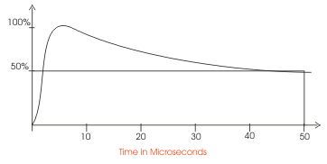

Basic Insulation Level Definition
When lightning impulse over voltage appears in the system, it is discharged through surge protecting devices before the equipments of the system get damaged. Hence, the insulation of such equipment must be designed to withstand a certain minimum voltage before the lightning impulse over voltage gets discharged through surge protecting devices. Therefore, operating voltage level of surge protecting devices must be lower than the said minimum voltage withstand level of the equipment. This minimum voltage rating is defined as BIL or basic insulation level of electrical equipment.
It is needless to say, the voltage withstand capacity of all equipments of an electrical substation or an electrical transmission system must be decided as per its operating system voltage. To ensure the stability of the system, during over voltage phenomenon, the breakdown or flash-over strength of all equipments connected to the system, should exceed a selected level. There may be different kind of over voltage tresses appeared on the system. These over voltages may deffer in characteristics such as amplitude, duration, waveform and frequency etc. In the view of economy, an electrical power system must be designed for a basic insulation level or BIL depending upon the different characteristics of all possible over voltages appear on the system. Moreover there are different over voltage protecting devices installed in the system, which safely protect the system against different over voltage phenomenon. Due to these protecting devices the abnormal over voltages disappear from the system as fast as possible. Hence, this is unnecessary to design a system whose insulation can withstand all types of over voltages for all duration of time. For example, a lightning impulse voltage appears on the system for a period of microsecond rage and this is cleared from the system by lightning arrester as rapidly as possible. The insulation of an electrical equipment must be so designed that it should not be damaged before the lighting impulse voltage is cleared by lightning arrester. The basic insulation level or BIL of an electrical equipment determines the principle dielectric qualities of the apparatus and is expressed for impulse tested apparatus by peak value of the 1/50 microsecond full wave withstand voltage. The amount of insulation provided on any piece of apparatus and particularly the transformers constitutes quite an appreciable part of the cost. The standardizing bodies have had in mind to fix the basic insulation level or BIL as low as is commensurate with safety.
The lightning impulse voltage is fully natural phenomena and hence it is highly uncertain in nature. So it is impossible to predict the shape and size of lightning surge. After studying and working lots on the nature of lightning surges, the standardizing bodies have decided and introduces a basic shape of impulse wave which is used for high voltage impulse testing purpose of electrical equipments. Although this created impulse voltage does not have any direct relation with natural lightning surges.
Before going through details of basic insulation level of an electrical system, let's try to understand basic shape of standard impulse voltage.
Impulse Voltage
As per American Standard the impulse wave shape is 1.5/40 microsecond. As per Indian Standard this is 1.2/50 microsecond. This representation of the wave has a special significance. Such as 1.2/50 microsecond impulse wave represents an unidirectional wave which rises to its peak value from zero in 1.2 microseconds and then falls to 50% of peak value in 50 microseconds. The represented wave shape is shown below,

The breakdown or flash-over voltage of the electrical equipment with this wave shape are required to be equal or higher than the basic insulation level fixed and the spark over voltage and discharge voltage of the protecting devices like lightning arresters, are definitely required to be lower than these values so that during lightning surges, the discharge occurs through the lightning arresters not through the equipment itself. There must be sufficient margin between the lightning arrestoer and insulation level of the equipments.
Basic Insulation Level Table
| Nominal System Voltage | Indian Standards BIL | British Standards BIL |
|---|---|---|
| 11KV | 75KV | - |
| 33KV | 170KV | 200KV |
| 66KV | 325KV | 450KV |
| 132KV | 550/650KV | 650/750KV |
| 220KV | 900/1050KV | 900/1050KV |
 by
by